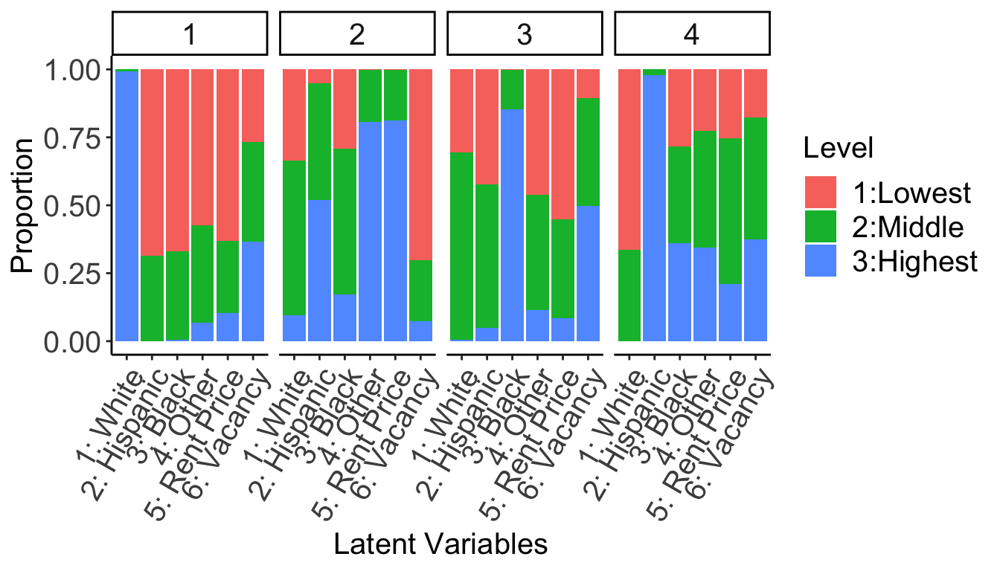
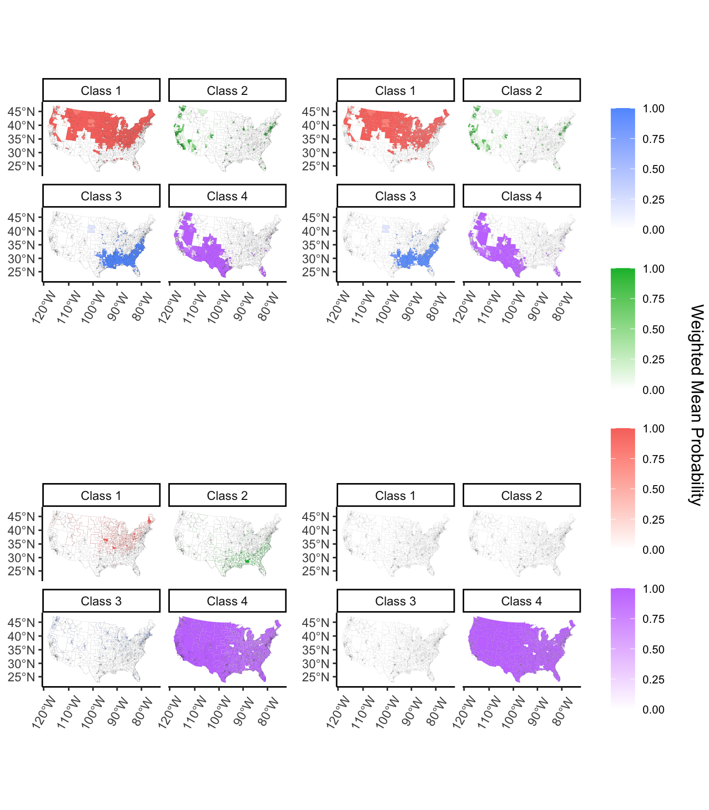
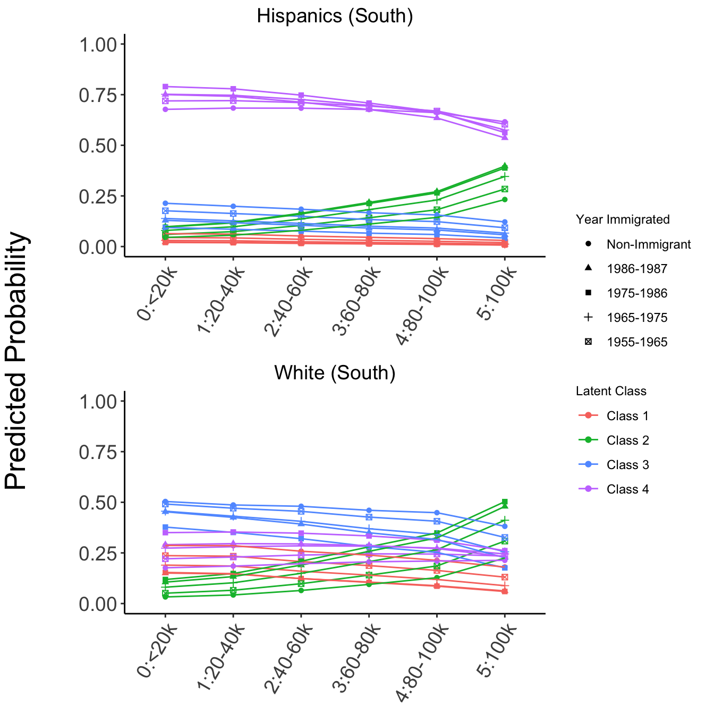
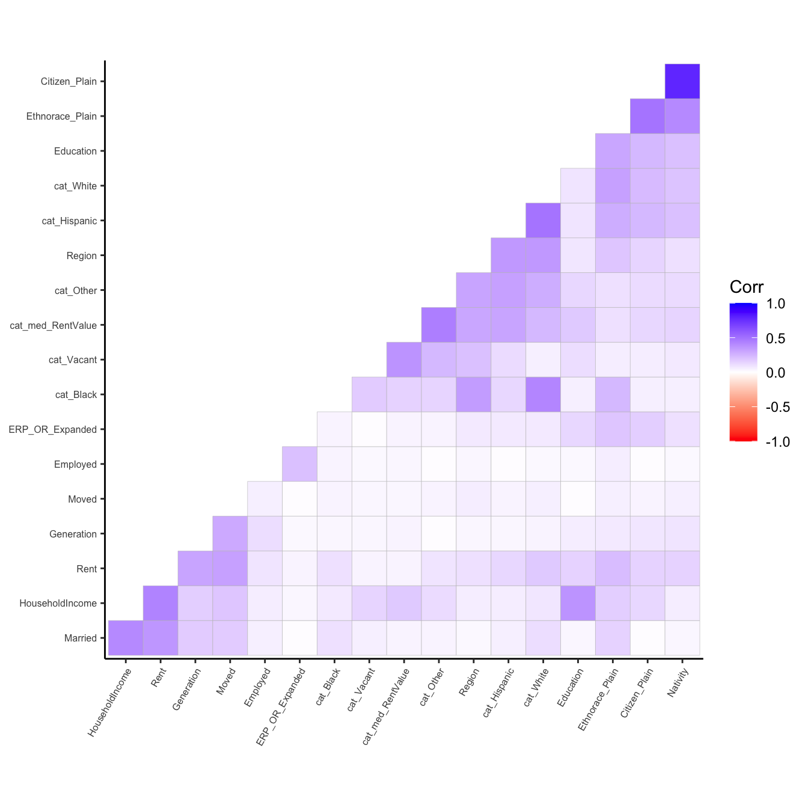
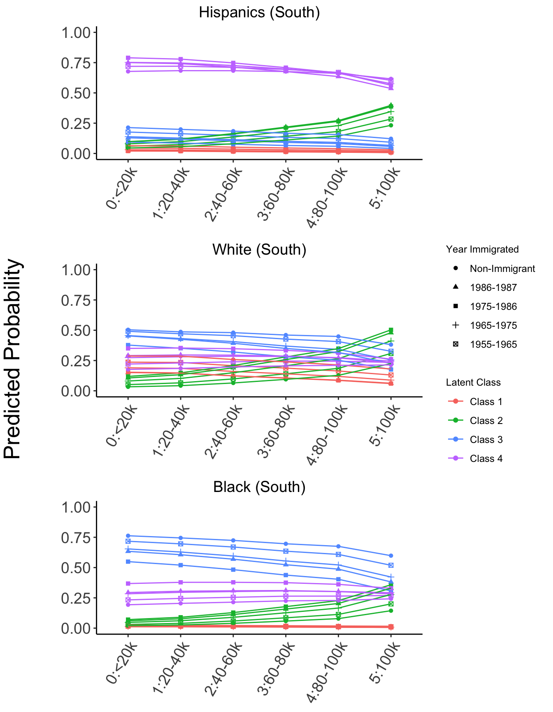
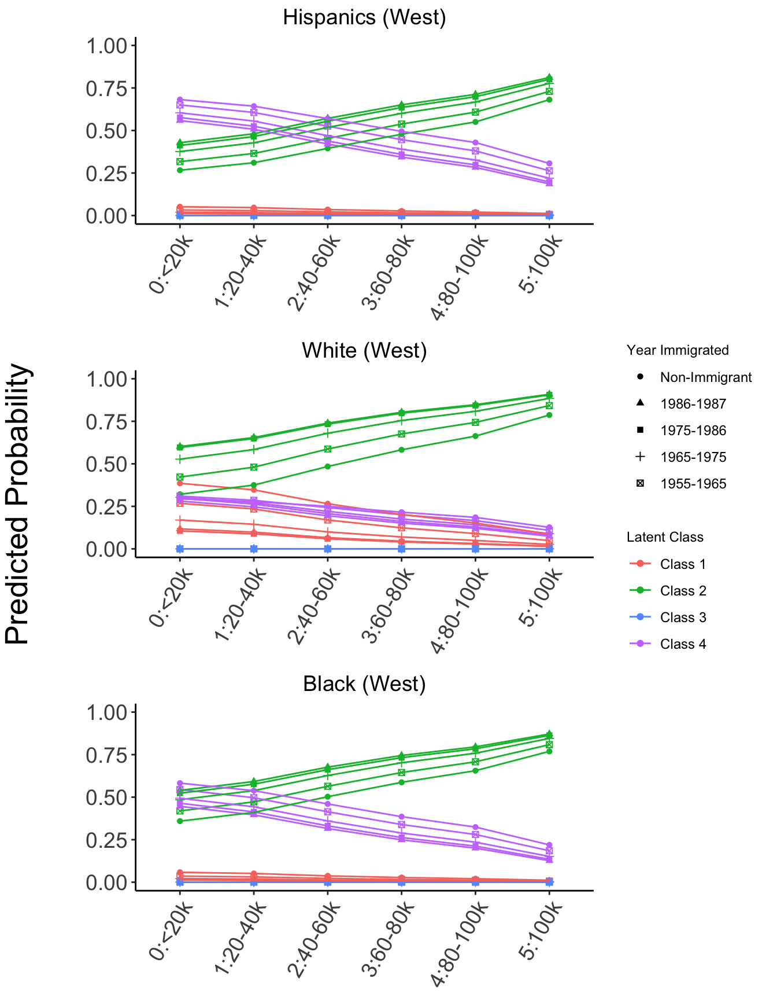
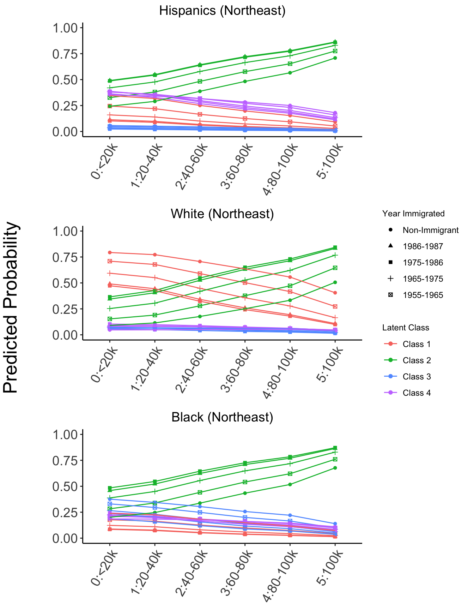

Spatial Assimilation, coined by Doug Massey, refers to the process whereby a group attains residential propinquity with members of a host society.
Place Stratification, a theory that emerged as a result of political economy’s influence in the late 80s, refers to the persistence of prejudice and discrimination that act to constrain the residential mobility options of disadvantaged groups.
Public Use Microdata Areas (PUMAs), the smallest, publicly-available ecological unit from the Integrated Public Use Microdata Series (IPUMS) U.S.A. database, and it contains at least 100,000 individuals.
Latent Class Analysis, a method that allows for the dependent variable to take on a more robust set of variables to characterize qualitatively different subgroups, and at the same time runs an underlying multinomial logistic regression model to explore more complex relationships between latent outcomes and predictor variables. In this case, I use a 4-class model.
A note on the year immigrated variable: Figure 3 breaks things down by year immigrated. Why is this important? For many reasons! Years 1955-1965 was the decade following the 1954 Operation Wetback, which was a federal government-sponsored initiative that began to crack down on illegal immigration. Then, in 1965, the Hart-Celler Act (or otherwise known as the Immigration and Nationality Act of 1965) opened up new pathways for immigrants from historically underrepresented countries, while at the same time legalizing and institutionalizing quotas. It wasn’t until the next big immigration act, the 1986 IRCA (also known as the Immigration Reform and Control Act), that changed a lot of things: it regulated the employment of undocumented immigrants, increased border militarization at the U.S.-Mexico border, and allocated funds for detention centers, surveillance hardware, police patrolling, and fencing, all while labor-demand in the South was rising rapidly. Hence, these years are explored to determine any significant outcomes between ethnoracial groups.



| Variable | Levels | Northeast | Midwest | South | West | p |
|---|---|---|---|---|---|---|
| Latent Variables | ||||||
| White Prop | [0.00142,0.611) | 20995 (17.3) | 16339 (9.4) | 83135 (32.9) | 62264 (43.3) | <0.001 |
| [0.61055,0.850) | 32242 (26.5) | 34238 (19.8) | 121962 (48.2) | 54890 (38.1) | ||
| [0.85027,0.991] | 68337 (56.2) | 122628 (70.8) | 47814 (18.9) | 26752 (18.6) | ||
| Hispanic Prop | [0.0000,0.0319) | 53900 (44.3) | 103840 (60.0) | 80464 (31.8) | 5658 (3.9) | <0.001 |
| [0.0319,0.1257) | 42350 (34.8) | 57232 (33.0) | 91177 (36.1) | 43894 (30.5) | ||
| [0.1257,0.9796] | 25324 (20.8) | 12133 (7.0) | 81270 (32.1) | 94354 (65.6) | ||
| Black Prop | [0.0000,0.0281) | 55807 (45.9) | 90620 (52.3) | 27855 (11.0) | 77740 (54.0) | <0.001 |
| [0.0281,0.1186) | 40965 (33.7) | 54816 (31.6) | 88724 (35.1) | 53285 (37.0) | ||
| [0.1186,0.9838] | 24802 (20.4) | 27769 (16.0) | 136332 (53.9) | 12881 (9.0) | ||
| Other Prop | [0.0000,0.0171) | 39803 (32.7) | 82974 (47.9) | 107363 (42.5) | 9391 (6.5) | <0.001 |
| [0.0171,0.0453) | 40969 (33.7) | 64004 (37.0) | 93184 (36.8) | 39122 (27.2) | ||
| [0.0453,0.7829] | 40802 (33.6) | 26227 (15.1) | 52364 (20.7) | 95393 (66.3) | ||
| Median Rent | [200, 505) | 33314 (27.4) | 102208 (59.0) | 115468 (45.7) | 19623 (13.6) | <0.001 |
| [505, 705) | 31512 (25.9) | 52317 (30.2) | 87516 (34.6) | 46290 (32.2) | ||
| [705,1700] | 56748 (46.7) | 18680 (10.8) | 49927 (19.7) | 77993 (54.2) | ||
| Vacant Prop | [ 0.666, 6.66) | 54944 (45.2) | 50316 (29.0) | 47829 (18.9) | 72097 (50.1) | <0.001 |
| [ 6.663,11.41) | 34347 (28.3) | 72432 (41.8) | 94371 (37.3) | 41900 (29.1) | ||
| [11.410,56.39] | 32283 (26.6) | 50457 (29.1) | 110711 (43.8) | 29909 (20.8) | ||
| Predictor Variables | ||||||
| Mover Status | Moved | 15137 (12.5) | 25096 (14.5) | 44817 (17.7) | 26618 (18.5) | <0.001 |
| Did not Move | 106437 (87.5) | 148109 (85.5) | 208094 (82.3) | 117288 (81.5) | ||
| Ethnoracial Identity | Black | 8338 (6.9) | 9433 (5.4) | 35049 (13.9) | 4906 (3.4) | <0.001 |
| Hispanic | 9795 (8.1) | 7556 (4.4) | 32700 (12.9) | 36885 (25.6) | ||
| White | 103441 (85.1) | 156216 (90.2) | 185162 (73.2) | 102115 (71.0) | ||
| Birth Cohort | 1955-1965 Cohort | 55064 (45.3) | 74877 (43.2) | 103773 (41.0) | 58682 (40.8) | <0.001 |
| 1965-1975 Cohort | 43047 (35.4) | 57553 (33.2) | 87124 (34.4) | 49527 (34.4) | ||
| 1975-1986 Cohort | 22773 (18.7) | 39092 (22.6) | 59121 (23.4) | 34084 (23.7) | ||
| 1986-1987 Cohort | 690 (0.6) | 1683 (1.0) | 2893 (1.1) | 1613 (1.1) | ||
| Immigrant Cohort | 1955-1965 IM | 759 (0.6) | 540 (0.3) | 1496 (0.6) | 1125 (0.8) | <0.001 |
| 1965-1975 IM | 1766 (1.5) | 948 (0.5) | 2811 (1.1) | 2715 (1.9) | ||
| 1975-1986 IM | 3502 (2.9) | 1796 (1.0) | 6645 (2.6) | 8632 (6.0) | ||
| 1986-1987 IM | 11127 (9.2) | 6295 (3.6) | 21629 (8.6) | 19352 (13.4) | ||
| Non-Immigrant | 104420 (85.9) | 163626 (94.5) | 220330 (87.1) | 112082 (77.9) | ||
| Education (Years) | Mean (SD) | 13.9 (2.6) | 13.5 (2.3) | 13.3 (2.7) | 13.3 (3.0) | <0.001 |
| Household Income | [<20K) | 9705 (8.0) | 16339 (9.4) | 29424 (11.6) | 13393 (9.3) | <0.001 |
| [20k-40k) | 17708 (14.6) | 30652 (17.7) | 48785 (19.3) | 25680 (17.8) | ||
| [40k-60k) | 21424 (17.6) | 36410 (21.0) | 50175 (19.8) | 26746 (18.6) | ||
| [60k-80k) | 20315 (16.7) | 32735 (18.9) | 40680 (16.1) | 22951 (15.9) | ||
| [80k-100k) | 15555 (12.8) | 22060 (12.7) | 28771 (11.4) | 16894 (11.7) | ||
| [100k+] | 36867 (30.3) | 35009 (20.2) | 55076 (21.8) | 38242 (26.6) | ||
| Renter Status | Rented | 34124 (28.1) | 38279 (22.1) | 72825 (28.8) | 51359 (35.7) | <0.001 |
| Not Rented | 87450 (71.9) | 134926 (77.9) | 180086 (71.2) | 92547 (64.3) | ||
| Self-Employed Status | Self-Employed | 15083 (12.4) | 20186 (11.7) | 31398 (12.4) | 21167 (14.7) | <0.001 |
| Not Self-Employed | 106491 (87.6) | 153019 (88.3) | 221513 (87.6) | 122739 (85.3) | ||
| Married-Couple Status | Married-Couple Household | 85837 (70.6) | 124899 (72.1) | 176653 (69.8) | 100091 (69.6) | <0.001 |
| Non-Married-Couple Household | 35737 (29.4) | 48306 (27.9) | 76258 (30.2) | 43815 (30.4) | ||

| Intercept | -1.2 (0.03) | -3.4 (0.037) | -3.3 (0.028) | -4.3 (0.033) | -2.7 (0.031) | -3.6 (0.035) |
| Mover Status (Baseline: Did not Move) | ||||||
| Moved | 0.14 (0.013) | 0.16 (0.015) | 0.18 (0.012) | -0.0053 (0.013) | -0.024 (0.012) | 0.039 (0.013) |
| Ethnoracial Status (Baseline: White) | ||||||
| Black | 3.2 (0.026) | 0.56 (0.038) | 2.2 (0.027) | 2 (0.025) | 2.9 (0.02) | 2.6 (0.023) |
| Hispanic | -14 (3.3e-15) | 4.1 (3.5e-07) | 21 (6e-07) | 1.8 (0.021) | 0.64 (0.025) | 2.8 (0.02) |
| Birth Cohort (Baseline: 1955-1965 Cohort) | ||||||
| 1965-1975 | 0.035 (0.01) | 0.015 (0.011) | 0.018 (0.0089) | 0.04 (0.0099) | 0.014 (0.0096) | -0.017 (0.011) |
| 1975-1986 | 0.14 (0.012) | -0.0072 (0.014) | 0.046 (0.011) | 0.026 (0.013) | 0.14 (0.011) | 0.035 (0.013) |
| 1986-1987 | 2.1 (1.6e-06) | 19 (0.018) | 18 (0.018) | -0.083 (0.051) | 0.076 (0.039) | -0.086 (0.045) |
| Immigrant Cohort (Baseline: Non-Immigrant) | ||||||
| 1955-1965 | 0.44 (0.077) | 0.69 (0.075) | 1.1 (0.06) | 0.64 (0.054) | 0.17 (0.062) | 0.42 (0.061) |
| 1965-1975 | 0.44 (0.073) | 1.1 (0.069) | 1.6 (0.057) | 1.3 (0.041) | 0.31 (0.052) | 0.85 (0.046) |
| 1975-1986 | 0.3 (0.074) | 1.3 (0.072) | 2.3 (0.059) | 1.9 (0.033) | 0.34 (0.042) | 1.3 (0.035) |
| 1986-1987 | 0.58 (0.052) | 1.9 (0.049) | 2.8 (0.043) | 1.8 (0.02) | 0.54 (0.025) | 1.1 (0.022) |
| Educ | 0.051 (0.0021) | 0.16 (0.0023) | 0.19 (0.0018) | 0.17 (0.0018) | 0.033 (0.0019) | 0.068 (0.002) |
| Household Income (Baseline: <20k) | ||||||
| 20-40k | -0.038 (0.016) | 0.24 (0.023) | 0.27 (0.016) | 0.26 (0.021) | -0.032 (0.016) | 0.05 (0.018) |
| 40-60k | 0.017 (0.017) | 0.58 (0.023) | 0.71 (0.016) | 0.78 (0.021) | 0.056 (0.016) | 0.21 (0.019) |
| 60-80k | 0.046 (0.018) | 0.91 (0.024) | 1.1 (0.017) | 1.2 (0.021) | 0.092 (0.017) | 0.34 (0.02) |
| 80-100k | 0.23 (0.02) | 1.3 (0.025) | 1.6 (0.019) | 1.7 (0.022) | 0.18 (0.019) | 0.47 (0.022) |
| 100k+ | 0.43 (0.02) | 1.9 (0.024) | 2.4 (0.018) | 2.4 (0.021) | 0.19 (0.018) | 0.65 (0.021) |
| Renting Unit? (Baseline: Not Renting) | ||||||
| Yes | 0.19 (0.012) | 0.25 (0.014) | 0.88 (0.011) | 0.77 (0.012) | 0.26 (0.011) | 0.45 (0.013) |
| Self-Employed? (Baseline: Not Self-Employed) | ||||||
| Yes | -0.023 (0.013) | 0.029 (0.014) | 0.17 (0.011) | -0.012 (0.013) | -0.073 (0.013) | 0.051 (0.014) |
| Married-Couple? (Baseline: Non-Married-Couple) | ||||||
| Yes | -0.27 (0.011) | -0.44 (0.013) | -0.74 (0.0099) | -0.7 (0.011) | -0.38 (0.01) | -0.53 (0.012) |
| Region (Baseline: Northeast) | ||||||
| Midwest | -1.3 (0.013) | 0.61 (0.016) | -1 (0.024) | |||
| South | -0.00012 (0.013) | 3 (0.015) | 2.3 (0.018) | |||
| West | 2 (0.013) | -9.9 (2.3e-06) | 2.6 (0.02) | |||


